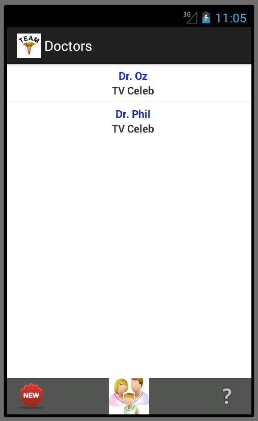
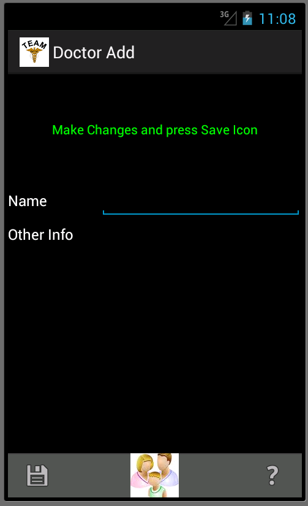

Adding a New Doctor
To add a new doctor simply click on the "Doctors" icon on the
TAB bar.

Click on the "New" icon in the Tab Bar.

You can then enter the Doctor's name. You also can enter "Other
information" such as comments etc. After entering the
information click "Save" or disk icon to add the doctor to the TEAM system.
To delete a doctor, go to the Doctor Edit screen and click on the red X to delete.